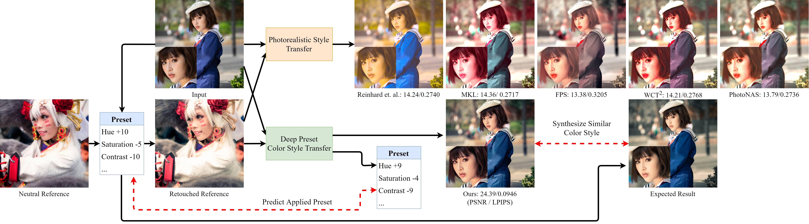
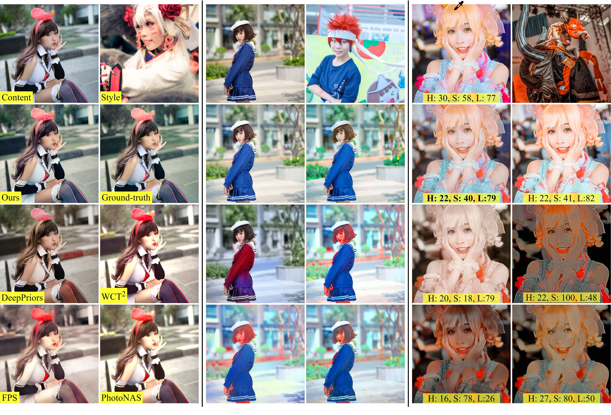

Deep Preset:
Blending and Retouching Photos with Color Style Transfer
| Man M. Ho | Jinjia Zhou |
|
Hosei Univerisity, Tokyo, Japan |
| [Paper] | [Supplemental Document] | [Supplemental Video] | [Code] |
In Proceedings of the Winter Conference on Applications of Computer Vision (WACV), 2021


Abstract
End-users, without knowledge in photography, desire to beautify their photos to have a similar color style as a well-retouched reference. However, the definition of style in recent image style transfer works is inappropriate. They usually synthesize undesirable results due to transferring exact colors to the wrong destination. It becomes even worse in sensitive cases such as portraits. In this work, we concentrate on learning low-level image transformation, especially color-shifting methods, rather than mixing contextual features, then present a novel scheme to train color style transfer with ground-truth. Furthermore, we propose a color style transfer named Deep Preset. It is designed to 1) generalize the features representing the color transformation from content with natural colors to retouched reference, then blend it into the contextual features of content, 2) predict hyper-parameters (settings or preset) of the applied low-level color transformation methods, 3) stylize content to have a similar color style as reference. We script Lightroom, a powerful tool in editing photos, to generate 600,000 training samples using 1,200 images from the Flick2K dataset and 500 user-generated presets with 69 settings. Experimental results show that our Deep Preset outperforms the previous works in color style transfer quantitatively and qualitatively.
Overall Concept

Network Architecture

A Result

If you find our work useful, please consider citing
@InProceedings{Ho_2021_WACV,
author = {Ho, Man M. and Zhou, Jinjia},
title = {Deep Preset: Blending and Retouching Photos With Color Style Transfer},
booktitle = {Proceedings of the IEEE/CVF Winter Conference on Applications of Computer Vision (WACV)},
month = {January},
year = {2021},
pages = {2113-2121}
}
License
Our code and trained models are for non-commercial uses and research purposes only.